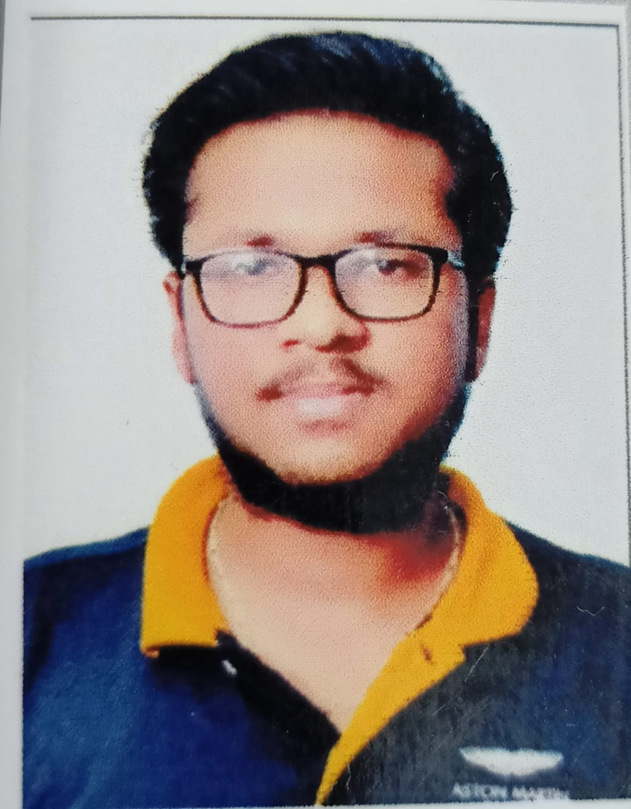

|  | Name = Gaurav jindal#14111,ganesh nagar,bathinda gjindal_be20@thapar.edu |
| qualification | school/college | university/board | year | percentage/CGPA |
|---|---|---|---|---|
| B.E(ECE) | THAPAR UNIVERSITY | THAPAR UNIVERSITY | 2020-2024 | 8.03(present) |
| 12 th | Lord Rama Public School | C.B.S.E | 2020 | 80% |
| 10th | Lord Rama Public School | C.B.S.E | 2018 | 81.33% |
A project, provides a platform to send message automatically at a given time by the user
Aim is to detect the face from the saved vedio or live cam
Aim is to resize and convert the given image to gray scale.
A Project to detect the speed of the vehicle
A project to move the buggy at the pre-defined path with ultrasonic sensors To detect the obstacle (if any)
Seeking a position in the IT department of the organization to start my career for the new learning,where I can communicate with the people and judge the people and that should help theorganization to achieve their goals.